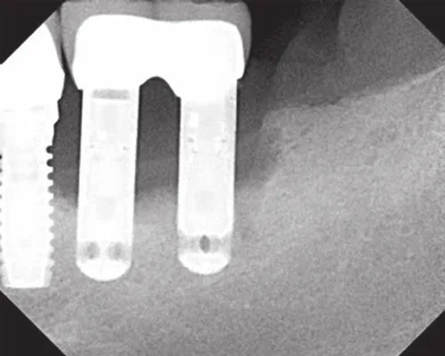
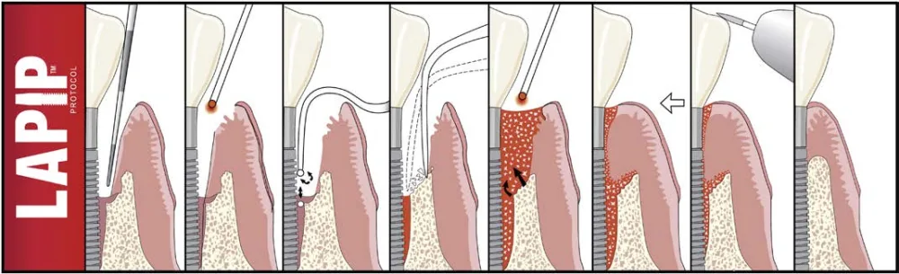

نسخه استخراجشده؛ ترجمه یا تأیید علمی انجام نشده است. وضعیت: captured
یک فرمول نسخهی مشخص هست که باید بدانی:
«آموکسیسیلین ۵۰۰ میلیگرم سه بار در روز، در مجموع ۲۱ کپسول، مترونیدازول ۲۵۰ میلیگرم، ۲۱ قرص سه بار در روز، تا زمانی که همه توسط بیمار مصرف شود، مینوسایکلین (آرستین) بهصورت زیرلثهای اطراف ایمپلنتها با پاکت.»
۲۱ واحد از هرکدام، سه بار در روز = یک هفته. و عبارت «تا زمانی که همه مصرف شود» یعنی دوره باید کامل شود.
چرا ترکیب آموکسیسیلین و مترونیدازول؟ بسیاری از مطالعات مؤثرترین ترکیب را همین دو دارو نشان دادهاند. مترونیدازول بر بیهوازیها باکتریکش است و با مختل کردن سنتز DNA، بهویژه بر A. actinomycetemcomitans، P. gingivalis و P. intermedia اثر دارد؛ و ترکیب دو دارو بر A. actinomycetemcomitans اثر بلندمدت نشان داده است.
و این تأیید شده است: «استفاده از آنتیبیوتیکهای سیستمیک برای مدیریت پریودنتیت تثبیت شده است.»
اما — و اینجا صداقت علمی مهم است:
«با این حال، مطالعات درمان پریموکوزیت با استفاده از آنتیبیوتیکهای سیستمیک کمشمارند.»
یعنی برای موکوزیت، شواهد کافی برای تجویز سیستمیک وجود ندارد. و از طرف دیگر، در پاکتهای کمتر از ۶ میلیمتر «اثر مکانیکی بهتنهایی برای رسیدن به رفع بالینی و هیستولوژیک ضایعات موکوزیت کافی است.»
پس تفکیک روشن است: در موکوزیت، پاکسازی مکانیکی کافی است؛ آنتیبیوتیک سیستمیک را برای پریایمپلنتیت نگه دار.
و اندیکاسیون دقیقتر: «آنتیبیوتیکهای سیستمیک و موضعی و عوامل شیمیایی موضعی مانند کلرهگزیدین در حضور اگزودا اندیکاسیون دارند.»
«در حضور اگزودا» — یک معیار بالینی ساده و قابل مشاهده.
و شواهد بالینی این رویکرد: مطالعهای را ببین که در آن «سیوشش بیمار با پریایمپلنتیت متوسط تا پیشرفته، ضدعفونی فلپ دسترسی داشتند و پس از آن ترکیبی از آنتیبیوتیکهای سیستمیک (آموکسیسیلین و مترونیدازول) دریافت کردند.»
به ترتیب دقت کن: ضدعفونی فلپ دسترسی، و سپس آنتیبیوتیک — نه آنتیبیوتیک بهجای جراحی.
و یادآوری الگوی سهمرحلهای: در گروه ۳، درمان ضدمیکروبی گام اول است و جراحی گام سوم. آنتیبیوتیک اینجا زمینهساز جراحی است، نه جایگزین آن.

پروتکل بازسازی — با یک عدد که باید بدانی:
مراحل چنین است: «پیوند استخوانی انتخابی (ایدهآل یک اتوگرفت یا آلوگرفت) روی نقص قرار داده میشود.» و سپس:
«یک ممبران جذبی (ممبران کلاژنی جذبی با دوام گسترشیافته: ۴ تا ۶ ماه) روی پیوند استخوانی کشیده میشود، با دقت به پوشاندن ۳ میلیمتر فراتر از تمام لبههای پیوند استخوانی.»
۳ میلیمتر فراتر از تمام لبهها. این همان اصلی است که در ماژول GBR خواندی — ممبرانی که لبههایش روی استخوان میزبان ننشیند، سلولهای ناخواسته را از کنارش راه میدهد.
و «۴ تا ۶ ماه» مدت دوام ممبران است.
و توصیهی استاندارد: «استفاده از مادهی بازسازیکننده (آلوگرفتها و ممبرانهای جذبی با دوام گسترشیافته) اکیداً توصیه میشود.»
طراحی فلپ: در خود پروتکل بازسازی، فلپ تمامضخامت موکوپریوستئال تا فراتر از خط موکوژنژیوال بلند میشود تا بستن بدون کشش ممکن شود. ولی در تکنیک فلپ جابهجاشده به اپیکال (برای تحلیل افقی بیش از یک تا دو رزوه): «ایدهآل یک فلپ با ضخامت نسبی توصیه میشود چون تطابق اپیکالی فلپ را بهبود میبخشد.»
دلیلش تطابق اپیکالی است، یعنی وقتی میخواهی فلپ را در موقعیت پایینتری بنشانی و به پریوست بخیه کنی؛ در محلهای کمدسترس، بلند کردن فلپ تمامضخامت آسانتر است.
و اگر بافت کراتینیزه کم است: در پروتکل افزایش بافت با ماتریکس درم — «ماتریکس درم بهطور ایدهآل جایگذاری و به بافت چسبندهی مجاور بخیه میشود (کرومیک ۵-۰)» و «بخیهی PGA یا کرومیک (۵-۰ توصیهشده) برای تثبیت ماتریکس درم آلوژنیک (آلودرم) به محل گیرنده به کار میرود.»
حالا رویکرد لیزری — LAPIP:
این تکنیک را بشناس: «تکنیک معرفیشده بهعنوان پروتکل پریایمپلنتیت بهکمک لیزر (LAPIP) شناخته میشود که بیماران با پریایمپلنتیت را بدون استفاده از افزایش استخوان مدیریت میکند.»
«بدون افزایش استخوان» — و همین آن را از پروتکل بازسازی جدا میکند.
جزئیات فنی: لیزر PerioLase MVP-7 پالسی نئودیمیوم-ایتریوم آلومینیوم گارنت (Nd:YAG)، و «برای درمان پریایمپلنتیت، LAPIP همان توالی گامبهگام تعریفشده در پروسیجر LANAP را دنبال میکند، ولی با دوز نور (انرژی) کاهشیافته در اطراف ایمپلنتها.»
دوز کاهشیافته — و زمان تابش روی سطح ایمپلنت هم باید محدود بماند تا سطح بیش از حد داغ یا زغالی نشود.
و دادههای بالینی که دامنهی کاربرد را نشان میدهند:
• «میانهی زمان سپریشده میان تاریخ کاشت ایمپلنت و تاریخ درمان LAPIP چهار سال بود (۳ ماه تا ۱۶ سال).»
• «دادههای پیگیری از ۸ تا ۳۶ ماه پس از درمان LAPIP متغیر بود.»
به بازهی ۳ ماه تا ۱۶ سال دقت کن — بیماری پریایمپلنت میتواند در هر نقطهای از عمر ایمپلنت ظاهر شود، و همین است که پایش را مادامالعمر میکند.
و سایر رویکردهای لیزری: در روش غیرجراحی لیزرهای دیود، Nd:YAG، اربیوم و CO2 به کار رفتهاند (اربیوم حتی جرم را از سطح ایمپلنت برمیدارد)؛ در روش جراحی، لیزر پس از بلند کردن فلپ برای برداشتن بافت گرانولاسیون و دکنتامیناسیون سطح به کار میرود؛ و درمان فوتودینامیک ضدمیکروبی که بهعنوان «یک رویکرد مبتنی بر نور برای از بین بردن باکتریها» توصیف میشود.
